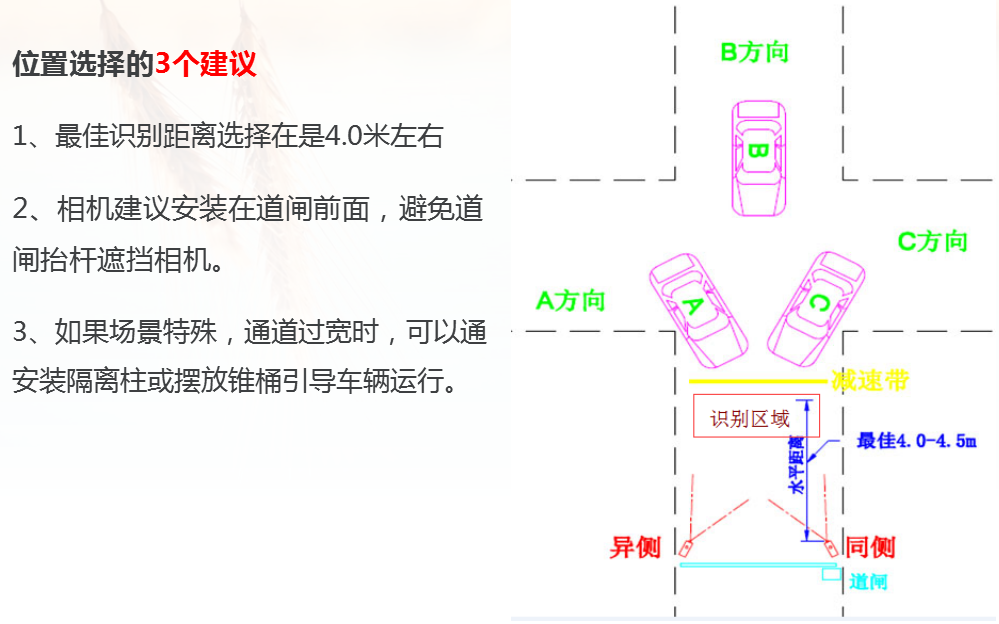
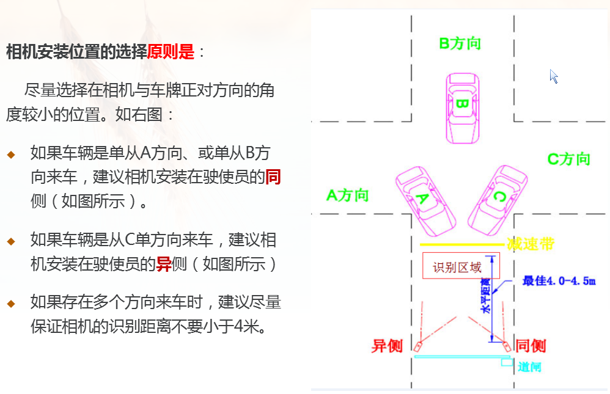
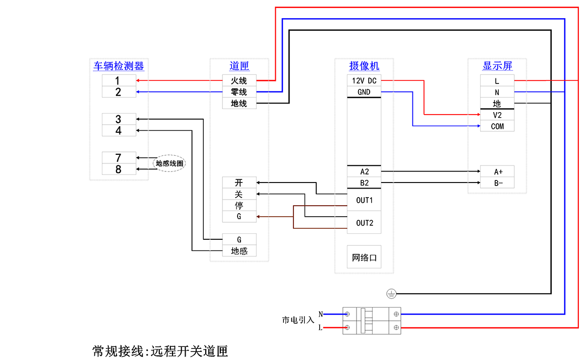

1.定位原则


2.放线规则
(1)每台相机需要一根独立网线,网线至少要预留4米;
(2)从岗亭或控制室放一根220v的电源线到道匣或显示屏安装的位置,220v电源可以并联分出去给其它
的道匣和显示屏供电;
(3)从相机到道匣放一根8芯线(预留4芯备用).

3.接线方法
参考下图接线.

4.软件部署
(1)首先下载必要的文件
dotNet4.6(车牌识别管理软件基于此架构编写，需要它的支持才能够运行)
SQL2008R2数据库下载(请先安装迅雷,再下载)[如果不使用sql2008数据库,可不用下载]
车场管理软件
批量导入数据模版及工具
设置可读可写共享文件夹(一键解决局域网内共享问题)
摄像机调试工具(含白名单导入模版及功能)
(2)软件参数设置
a.解压下载的车场管理软件,发送"ParkUI.exe"快捷方式到桌面即完成软件部署;
注:用于停车场管理的电脑都要拷贝一份车场管理软件.
b.安装dotNet4.6;若使用sql2008数据库,还需要安装sql2008数据库软件.
c.插上加密狗,打开桌面上的"ParkUI.exe"快捷方式,弹出找不到数据库的对话框,点击"是",然后按照提示完成数据库创建.
数据库创建参考这里.
d.进入软件主界面,设置收费标准\车场设置\车道设置\增加收费员账户;
e.切换到收费员账户登入软件并进入实时监控,即可开始收费操作.
详细的软件操作参考软件快速操作手册.
多电脑多岗亭的停车场需要设置数据库,加密狗和车牌图片共享,参考车牌识别共享操作集中说明.
5.相机调试
a.修改相机IP;
b.画虚拟线圈和识别区域;
c.观察车牌成像大小和角度,是否符合要求;
详细的相机调试方法参考摄像机调试方法.